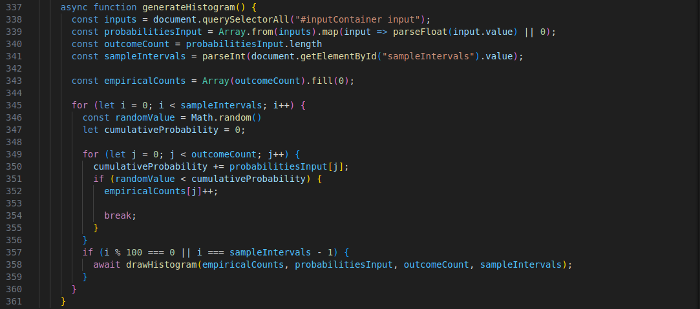
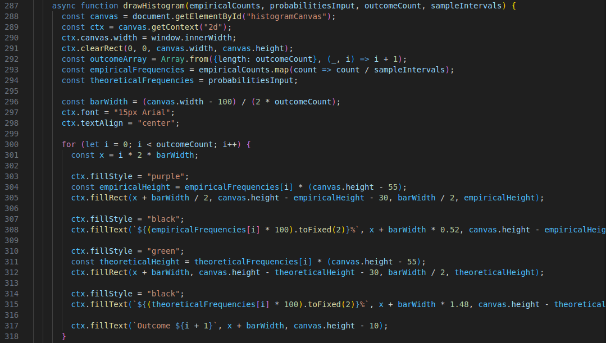
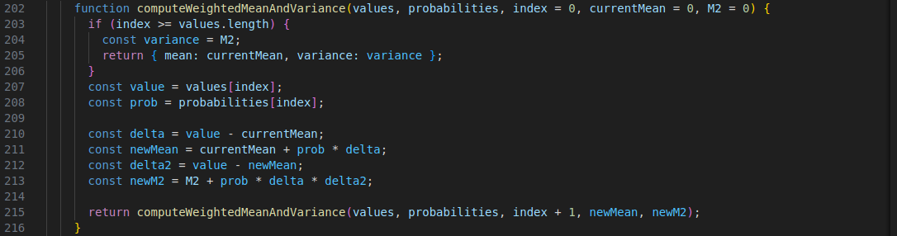

Homework 6
Theory
The Fundamental Theorem of Calculus (FTC)
The Fundamental Theorem of Calculus (FTC) connects differentiation and integration, giving us a way to compute
integrals through antiderivatives. This theorem also plays a significant role in probability theory,
particularly
in understanding the relationship between probability density functions (PDFs) and cumulative distribution
functions (CDFs) for continuous random variables.
The FTC has two parts:
- First Part: If \(F(x)\) is defined as an integral of a continuous function \(f(t)\) from \(a\) to \(x\): \[ F(x) = \int_a^x f(t) \, dt \] then \(F\) is differentiable, and its derivative is \(f(t)\). Thus, \[ F{\prime}(x) = f(x). \]
- Second Part: If \(f(x)\) is continuous on an interval \([a,b]\), then the definite integral of \(f\) from \(a\) to \(b\) is given by: \[ \int_a^b f(x) \, dx = F(b) - F(a), \] where \(F\) is any antiderivative of \(f\), meaning \(F{\prime} = f\).
Application to PDFs and CDFs in Probability Theory
In probability, the concepts of PDFs and CDFs for continuous random variables are closely tied to the FTC.
Definitions of PDF and CDF
- Probability Density Function (PDF): For a continuous random variable \(X\), the PDF \(f(x)\) represents the likelihood of \(X\) taking a value close to \(x\). This is not a probability itself, but rather a rate of probability per unit of \(x\).
- Cumulative Distribution Function (CDF): The CDF \(F(x)\) gives the probability that \(X\) is less than or equal to \(x\): \[ F(x) = \mathbb{P}(X \leq x) = \int_{-\infty}^x f(t) \, dt. \]
Applying the FTC to Relate PDF and CDF
According to the first part of the FTC:
- Since \(F(x)\) is defined as the integral of \(f(t)\) from \(-\infty\) to \(x\), we know that \(F\) is differentiable if \(f(x)\) is continuous.
- The derivative of \(F(x)\) with respect to \(x\) gives the PDF \(f(x)\): \[ F{\prime}(x) = f(x). \]
Example:
Consider a continuous random variable \(X\) with PDF \(f(x) = \frac{1}{2} e^{-\frac{|x|}{2}}\), which describes an exponential distribution centered at zero.
- The CDF \(F(x)\) for \(x \geq 0\) is: \[ F(x) = \int_{-\infty}^x \frac{1}{2} e^{-\frac{|t|}{2}} \, dt. \]
- Differentiating \(F(x)\) with respect to \(x\) gives back the PDF: \[ F{\prime}(x) = f(x) = \frac{1}{2} e^{-\frac{|x|}{2}}. \]
Practical
Convergence of the empirical distribution to the theoretical distribution
Sum: 0.00
Mean and Variance Analysis
As can be seen, the empirical mean and variance for large samples tend to be very close to the theoretical ones because of the law of large numbers, on the other hand, as the samples decrease, the difference between empirical and theoretical tends to grow.
Code Explanation
Generate Histogram
The generateHistorigram() function is responsible for collecting the input in order to draw the distribution historigram. In fact it simply generate a random number for each interval specified by the user and assign it to an outcome based on it's probability. Every 100 interval it draws the graph in order to give it an animation
Draw Histogram
the drawHistorigram() function simply takes the as input the dataset generated by the previous function and uses javascript canvas in order to draw rectangles. It also compure mean and variance and display the results.
Mean and Variance Compute
As for the previous homework, this function calculates the mean and variance using recursion.
The idea is to gradually add up the values while accounting for their associated probabilities, updating the
mean step by step using the following formula:
\[
\mu_n = \mu_{n-1} + p_n \cdot (x_n - \mu_{n-1})
\]
where \(p_n\) is the probability associated with \(x_n\).
The variance is updated in a similar way, using the formula:
\[
M_n = M_{n-1} + p_n \cdot (x_n - \mu_n)(x_n - \mu_{n-1})
\]
where \(M_n\) accumulates the weighted contribution to the variance.
